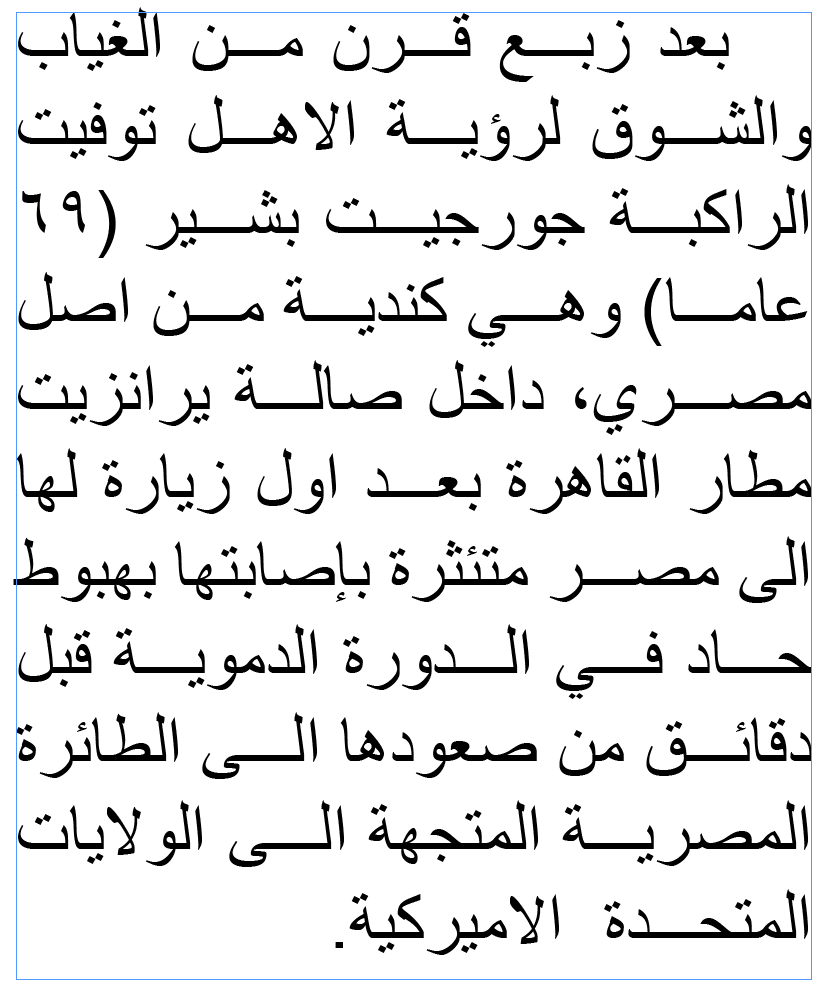
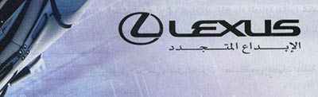

Shape The shape varies slightly from font to font, and is not always correct – for example, a number of fonts omit the initial alef. Here is the rendering of this code point in the Unicode charts.
Shape The shape varies slightly from font to font, and is not always correct – for example, a number of fonts omit the initial alef. Here is the rendering of this code point in the Unicode charts.
`, '\u{0601}': `
`, '\u{0602}': `
`, '\u{0603}': `
`, '\u{0604}': `
`, '\u{0605}': `
Used in Arabic text with Coptic numbers, such as in early astronomical tables. Unlike the other Arabic number signs, it extends across the top of the sequence of digits, and is used with Coptic digits, rather than with Arabic digits
The symbol should come before the number in logical order.
`, '\u{0606}': `؆
`, '\u{0607}': `؇
`, '\u{0608}': `؈
`, '\u{0609}': `؉
`, '\u{060A}': `؊
`, '\u{060B}': `؋
`, '\u{060C}': `،
`, '\u{060D}': `؍
`, '\u{060E}': `؎
`, '\u{060F}': `؏
`, '\u{0610}': `ؐ
`, '\u{0611}': `ؑ
`, '\u{0612}': `ؒ
`, '\u{0613}': `ؓ
`, '\u{0614}': `ؔ
`, '\u{0615}': `ؕ
`, '\u{0616}': `ؖ
`, '\u{0617}': `ؗ
`, '\u{0618}': `ؘ
`, '\u{0619}': `ؙ
`, '\u{061A}': `ؚ
`, '\u{061B}': `؛
This is the standard equivalent of the semi-colon in Arabic text.
`, '\u{061C}': `
In a RTL context, the bidi algorithm expects a sequence of numbers separated by hyphens (for example), to run left to right when preceded by Hebrew or N’Ko text, however it expects the sequence to run right to left when preceded by Arabic, Thaana, or Syriac characters.
ك 12-34-5678
އ 12-34-5678
ܐ 12-34-5678
ߕ 12-34-5678
א 12-34-5678
However, when a sequence like this appears alone on a line, it always runs left to right, because the bidi algorithm can't detect a previous Arabic, or other, character.
12-34-5678
This order not appropriate for documents in the Arabic language (and i guess Dhivehi or Syriac).
The ALM is a way of producing the right sequencing by inserting what is effectively an invisible Arabic character before the number.
12-34-5678
RLM and RLI..PDI, etc, are unable to produce the RTL sequencing, because the difference lies in what script precedes the number.
This is all helpful for Arabic language text, but Persian doesn’t order these sequences RTL, so it’s necessary to use one (any) of the directional formatting characters before such sequences in Persian to prevent this special ordering.
Similar special ordering is applied to numbers in equations, such as 1 + 2 = 3 for Arabic language text.
`, '\u{061E}': `؞
`, '\u{061F}': `؟
This is the standard equivalent of the question mark in Arabic text.
`, '\u{0620}': `ؠ
`, '\u{0621}': `ء
ʔ For historical reasons this is treated as an orthographic sign rather than as a letter of the alphabet. It sometimes stands alone, but usually appears with a 'carrier' letter - alef, waw, or yeh (أ إ ؤ ئ) for which separate precomposed characters are available in Unicode.
This codepoint is used for representing the standalone hamza only. On its own it has no joining behaviour.
Hamza with carrier letters: When the hamza is above or below another character it is possible to use ٔ [U+0654 ARABIC HAMZA ABOVE] or ٕ [U+0655 ARABIC HAMZA BELOW] with the appropriate base character, however Unicode provides precomposed characters which are usually preferred when writing Arabic.
The following are converted to precomposed characters by the NFC normalization form:
Important exceptions arise where the hamza is an integral part of the character itself (ie. an ijam). Examples of these characters include
Cutting and joining hamza in orthography: Classical arabic distinguishes between 'cutting' and 'joining' hamza. 'Cutting' means always pronounced, 'joining' means frequently elided. The joining hamza is of little practical importance in modern arabic pronounced without the old case endings.
The sign indicating a joining hamza is called a wasla (see ٱ [U+0671 ARABIC LETTER ALEF WASLA]).
In modern printed arabic, the hamza is rarely shown when it occurs at the beginning of a word.
Rules for choosing carriers:The following are simplified rules for use of (cutting) hamza:
At the beginning of a word hamza is always written with an alef carrier, regardless which vowel it takes, eg. أوّل (أَوَّل) ɑ͑w˖l ʔawːal first أجور (أُجُور) ɑ͑ʒwr ʔud͡ʒuːr wages إدارة (إِدَارَة) ɑ̜dɑrẗ ʔidaːra administration
When it takes an i-vowel the hamza is written below the alef. See أ [U+0623 ARABIC LETTER ALEF WITH HAMZA ABOVE] and إ [U+0625 ARABIC LETTER ALEF WITH HAMZA BELOW].
In the middle of a word it is almost always written above a carrier letter, as one of أ ؤ ئ
Examples: سأل (سَألَ) saɑ͑la saʔala to question مؤمن (مُؤْمِن) muw͓͑min muʔmin believer زائر (زَائِر) zaɑy͑ir zaːʔir visitor
Which one depends on the vowels preceding and following the hamza, and the rules are complicated (and a common source of spelling errors among Arabs). See أ [U+0623 ARABIC LETTER ALEF WITH HAMZA ABOVE], ؤ [U+0624 ARABIC LETTER WAW WITH HAMZA ABOVE], and ئ [U+0626 ARABIC LETTER YEH WITH HAMZA ABOVE]. When yeh is used as a mid-word carrier it loses its dots.
The rules are less clear for sequences that would produce two medial WA letters in a row, eg. CuʔuːC
By one application of the rules, ؤ [U+0624 ARABIC LETTER WAW WITH HAMZA ABOVE] is replaced with a free-standing hamza (this letter), eg. رؤوس (رُؤُوس) ruw͑uws ruʔuːs heads would be written رءوس rʔws
The rule appears to be less relevant in modern Arabic.
At the end of a word the hamza is written above a carrier after a short vowel, eg. قرأ (قَرَأ ) qaraɑ͑ qaraʔ to read تنبّؤ (تَنَبُّؤ) tanabu˖w͑ tanabbuʔ forecast
However, after a long vowel, a dipthong, or a vowelless letter this free-standing letter is used. eg. بناء (بِنَاء) binaɑʔ binaːʔ building مليء (مَلِيء) maliyʔ maliːʔ full جزء (جُزْء) ʒuz͓ʔ d͡ʒuzʔ portion شيء (شَيء) ʃayʔ ʃajʔ thing
The following tables are adapted from Wikipedia and show one set of rules for choosing a character to represent hamza in a given context. C or tatweel represents any consonant, ʔ represents this character, and v represents the vowel shown on the top row. The phones just before the table show what this character may represent in unvowelled text for that word position. Cells with * can also be spelled using a combining hamza over a base.
Word-medial. ʔɪ, ʔu, or ʔa, and ʔiː when followed by ي [U+064A ARABIC LETTER YEH], or ʔuː when followed by و [U+0648 ARABIC LETTER WAW], or ʔaː when followed by ا [U+0627 ARABIC LETTER ALEF].
| i | iː | u | uː | a | aː | examples | |
|---|---|---|---|---|---|---|---|
| CiʔvC | |||||||
| CiːʔvC | |||||||
| CuʔvC | |||||||
| CuːʔvC | ـُوءِـ | ـُوءِيـ | ـُوءُـ | ـُوءُوـ | ـُوءَـ | ـُوءَاـ | |
| CaʔvC | |||||||
| CaːʔvC | ـَاءُوـ | ـَاءَـ | ـَاءَاـ | قراءة | |||
| Diphthongs CajʔvC |
|||||||
| CawʔvC | ـَوْءِـ* | ـَوْءِيـ* | ـَوْءُـ* | ـَوْءُوـ | ـَوْءَـ* | ـَوْءَاـ* | |
| Clusters CʔvC |
ـْءُوـ | ||||||
| CvʔC | ـُوءْـ | ـَاءْـ |
Word-final. ɪʔ, uʔ, or aʔ, and iːʔ when preceded by ي [U+064A ARABIC LETTER YEH], or uːʔ when preceded by و [U+0648 ARABIC LETTER WAW], or aːʔ when preceded by ا [U+0627 ARABIC LETTER ALEF].
| i | iː | u | uː | a | aː | examples | |
|---|---|---|---|---|---|---|---|
| Cvʔ | ـِء* | ـِيء | ـُء* | ـُوء | ـَء* | ـَاء | مليء شيء بناء |
It can also occur word-finally in a consonant cluster, eg. جزء (جُزْء) ʒuz͓ʔ d͡ʒuzʔ portion.
`, '\u{0622}': `آ
ʔaː Represents the hamza (ء), in word-medial and word-final positions.
The following tables are adapted from Wikipedia and show one set of rules for choosing a character to represent hamza in a given context. C or tatweel represents any consonant, ʔ represents this character, and v represents the vowel shown on the top row. The phones just before the table show what this character may represent in unvowelled text for that word position.
Word-initial.ʔaː
| i | iː | u | o | a | aː | examples | |
|---|---|---|---|---|---|---|---|
| ʔvC | آـ | آب |
Word-medial.ʔaː
| i | iː | u | uː | a | aː | examples | |
|---|---|---|---|---|---|---|---|
| CiʔvC | |||||||
| CiːʔvC | |||||||
| CuʔvC | |||||||
| CuːʔvC | |||||||
| CaʔvC | ـَآـ | ||||||
| CaːʔvC | |||||||
| Diphthongs CayʔvC |
|||||||
| CawʔvC | ـَوْآـ | ||||||
| Clusters CʔvC |
ـْآـ | الْآنَ | |||||
| CvʔC |
Word-final. Not used.
`, '\u{0623}': `أ
ʔ Represents the hamza (ء) in word-initial, -medial, and -final positions.
At the beginning of a word hamza is always written with an alef carrier, regardless which vowel it takes. Which of the possible alternative sequences (أ, ؤ or ئ) is used to represent hamza mid-word depends on the vowels preceding and following the hamza. The rules are complicated (and a common source of spelling errors among Arabs).
The following tables are adapted from Wikipedia and show one set of rules for choosing a character to represent hamza in a given context. C or tatweel represents any consonant, ʔ represents this character, and v represents the vowel shown on the top row. The phones just before the table show what this character may represent in unvowelled text for that word position.
Word-initial. ʔa or ʔʊ, or ʔo when followed by و [U+0648 ARABIC LETTER WAW]. May also represent ʔoː in words like أوتيل.
| i | iː | u | o | a | aː | examples | |
|---|---|---|---|---|---|---|---|
| ʔvC | أُـ | أُوـ | أَـ | أَوَّل أجور أوتوبيس |
Word-medial. ʔa or aʔ
| i | iː | u | uː | a | aː | examples | |
|---|---|---|---|---|---|---|---|
| CiʔvC | |||||||
| CiːʔvC | |||||||
| CuʔvC | |||||||
| CuːʔvC | |||||||
| CaʔvC | ـَأَـ | سأل | |||||
| CaːʔvC | |||||||
| Diphthongs CayʔvC |
|||||||
| CawʔvC | ـَوْأَـ | ||||||
| Clusters CʔvC |
ـْأَـ | ||||||
| CvʔC | ـَأْـ | مأمور |
Notes:
CawʔaC can also be written ـَوْءَـ.
Word-final.aʔ
| i | iː | u | uː | a | aː | examples | |
|---|---|---|---|---|---|---|---|
| Cvʔ | ـَأ | قرأ |
Notes: May also be written ـُء.
See ء [U+0621 ARABIC LETTER HAMZA] for more information about hamza. See also إ [U+0625 ARABIC LETTER ALEF WITH HAMZA BELOW], ؤ [U+0624 ARABIC LETTER WAW WITH HAMZA ABOVE], and ئ [U+0626 ARABIC LETTER YEH WITH HAMZA ABOVE].
`, '\u{0624}': `ؤ
Represents the hamza (ء) in the middle or at the end of a word. It is not used word-initially.
In the middle of a word the hamza is almost always written above a carrier letter (its 'seat'). Which one depends on the vowels preceding and following the hamza, and the rules are complicated (and a common source of spelling errors among Arabs).
The following tables are adapted from Wikipedia and show one set of rules for choosing a character to represent hamza in a given context. C or tatweel represents any consonant, ʔ represents this character, and v represents the vowel shown on the top row. The phones just before the table show what this character may represent in unvowelled text for that word position.
Word-medial. ʔu or ʔa, and ʔuː when followed by و [U+0648 ARABIC LETTER WAW], or ʔaː when followed by ا [U+0627 ARABIC LETTER ALEF].
| i | iː | u | uː | a | aː | examples | |
|---|---|---|---|---|---|---|---|
| CiʔvC | |||||||
| CiːʔvC | |||||||
| CuʔvC | ـُؤُـ | ـُؤُوـ | ـُؤَـ | ـُؤَاـ | يؤثر سؤال |
||
| CuːʔvC | |||||||
| CaʔvC | ـَؤُـ | ـَؤُوـ | |||||
| CaːʔvC | ـَاؤُـ | ||||||
| Diphthongs CayʔvC |
|||||||
| CawʔvC | ـَوْؤُـ | ||||||
| Clusters CʔvC |
ـْؤُـ | ||||||
| CvʔC | ـُؤْـ | مؤمن |
Notes:
CawʔuC can also be written using
ـَوْءُـ
The rules are less clear for sequences that produce two WA letters in a row, eg. –uʔuː–
Some texts follow the rule that this letter is replaced with ء [U+0621 ARABIC LETTER HAMZA], eg. رؤوس would be written رءوس rʔws
The rule appears to be less relevant in modern Arabic.
Word-final. uʔ
| i | iː | u | uː | a | aː | examples | |
|---|---|---|---|---|---|---|---|
| Cvʔ | ـُؤ | تنبّؤ |
Notes: May also be written ـُء
See ء [U+0621 ARABIC LETTER HAMZA] for more information about hamza. See also أ [U+0623 ARABIC LETTER ALEF WITH HAMZA ABOVE], إ [U+0625 ARABIC LETTER ALEF WITH HAMZA BELOW], and ئ [U+0626 ARABIC LETTER YEH WITH HAMZA ABOVE].
`, '\u{0625}': `إ
ʔ Represents the hamza (ء), but is only used at the beginning of a word.
At the beginning of a word hamza is always written with an alef carrier, regardless which vowel it takes.
The following table is adapted from Wikipedia and show one set of rules for choosing a character to represent hamza in a given context. C or tatweel represents any consonant, ʔ represents this character, and v represents the vowel shown on the top row. The phones just before the table show what this character may represent in unvowelled text for that word position.
Word-initial. ʔɪ, or ʔiː when followed by ي [U+064A ARABIC LETTER YEH].
| i | iː | u | uː | a | aː | examples | |
|---|---|---|---|---|---|---|---|
| ʔvC | إِـ | إِيـ | إدارة, إيقاف |
Word-medial, -final.The mid-word and word-final equivalent of this character is ئ [U+0626 ARABIC LETTER YEH WITH HAMZA ABOVE].
See ء [U+0621 ARABIC LETTER HAMZA] for more information about hamza. See also أ [U+0623 ARABIC LETTER ALEF WITH HAMZA ABOVE], ؤ [U+0624 ARABIC LETTER WAW WITH HAMZA ABOVE], and ئ [U+0626 ARABIC LETTER YEH WITH HAMZA ABOVE].
`, '\u{0626}': `ئ
Represents the hamza (ء) in the middle of or at the end of a word. It is not used word-initially.
When yeh is used as a mid-word carrier it loses its dots.
In the middle of a word the hamza is almost always written above a carrier letter as one of أ ؤ ئ
Which one depends on the vowels preceding and following the hamza, and the rules are complicated (and a common source of spelling errors among Arabs).
The following tables are adapted from Wikipedia and show one set of rules for choosing a character to represent hamza in a given context. C or tatweel represents any consonant, ʔ represents this character, and v represents the vowel shown on the top row. The phones just before the table show what this character may represent in unvowelled text for that word position.
Word-medial. ʔɪ, ʔu, or ʔa, and ʔiː when followed by ي [U+064A ARABIC LETTER YEH], or ʔuː when followed by و [U+0648 ARABIC LETTER WAW], or ʔaː when followed by ا [U+0627 ARABIC LETTER ALEF].
| i | iː | u | uː | a | aː | examples | |
|---|---|---|---|---|---|---|---|
| CiʔvC | ـِئِـ | ـِئِيـ | ـِئُـ | ـِئُوـ | ـِئَـ | ـِئَاـ | |
| CiːʔvC | ـِيئِـ | ـِيئِيـ | ـِيئُـ | ـِيئُوـ | ـِيئَـ | ـِيئَاـ | |
| CuʔvC | ـُئِـ | ـُئِيـ | |||||
| CuːʔvC | |||||||
| CaʔvC | ـَئِـ | ـَئِيـ | نائم رئيس |
||||
| CaːʔvC | ـَائِـ | ـَائِيـ | زائر نهائي |
||||
| Diphthongs CajʔvC |
ـَيْئِـ | ـَيْئِيـ | ـَيْئُـ | ـَيْئُوـ | ـَيْئَـ | ـَيْئَاـ | |
| CawʔvC | ـَوْئِـ | ـَوْئِيـ | |||||
| Clusters CʔvC |
ـْئِـ | ـْئِيـ | |||||
| CvʔC | ـِئْـ | ـِيئْـ |
Notes: .The items in the last row can alternatively be written using ء [U+0621 ARABIC LETTER HAMZA].
Word-final. ɪʔ
At the end of a word the hamza is written above a carrier after a short i vowel only. However, it may also be written in this position using ء [U+0621 ARABIC LETTER HAMZA].
| i | iː | u | uː | a | aː | examples | |
|---|---|---|---|---|---|---|---|
| Cvʔ | ـِئ |
Notes: May also be written as ـِء.
See ء [U+0621 ARABIC LETTER HAMZA] for more information about hamza. See also أ [U+0623 ARABIC LETTER ALEF WITH HAMZA ABOVE], إ [U+0625 ARABIC LETTER ALEF WITH HAMZA BELOW], and ؤ [U+0624 ARABIC LETTER WAW WITH HAMZA ABOVE].
`, '\u{0627}': `ا
Formally speaking, this letter has no sound of its own. It is really a vowel lengthener and carrier. Its main uses in arabic orthography are:
as a carrier letter for a word-initial vowel, eg. الآن انتباه
as a lengthening sign for the a-vowel, eg. إنتاج
as a carrier letter for the hamza (see أ [U+0623 ARABIC LETTER ALEF WITH HAMZA ABOVE], and إ [U+0625 ARABIC LETTER ALEF WITH HAMZA BELOW]).
That said, its presence usually indicates the location of a vowel.
It also has one or two minor functions such as in conjunction with tawiin (nunation) (see U+064B ARABIC FATHATAN ً ).
Certain parts of the arabic verb end in a long u-vowel that is conventionally written with a following alef that has no effect on pronunciation, eg. كتبوا ktbwɑ kætæbuː
The alef is omitted if a suffix is added, eg. كتبوها ktbwhɑ kætæbuː-haa
See also أ [U+0623 ARABIC LETTER ALEF WITH HAMZA ABOVE], إ [U+0625 ARABIC LETTER ALEF WITH HAMZA BELOW], إ [U+0625 ARABIC LETTER ALEF WITH HAMZA BELOW], and ٱ [U+0671 ARABIC LETTER ALEF WASLA].
Arabic definite article When the definite article ال (alif followed by lām) precedes the following consonants the l sound is dropped and the following consonant lengthened.
ت ث د ذ ر ز س ش ص ض ط ظ ل ن
These are called 'sun letters' in Arabic. The other letters are 'moon letters'.j,32
The alif is also not pronounced if the preceding word ends with a vowel or h. It is, however, written.j,32
Shape. The combination لا [U+0644 ARABIC LETTER LAM + U+0627 ARABIC LETTER ALEF] is always rendered as a ligature. In Arabic language text, it typically looks like لا if it doesn't join, or لا otherwise. All combinations of these 2 letters with other diacritics, such as vowels or the precomposed characters mentioned just above, ligate.
`, '\u{0628}': `ب
b eg. بيت كَبِير مَكْتَب ضَبَاب
May be used for foreign words instead of p, eg. باريس
`, '\u{0629}': `ة
∅ Only used in word-final position, and usually with no sound, however it may have a weak h soundj,60, eg. مدرسة
ja when preceded by iːj,27, eg. يَابَانِية
Used for historical reasons to write the feminine ending a – the dots are borrowed from teh (ت).
Vowelled text may omit the short a diacritic before the teh marbuta, because the sound is always the same.
If any suffix is added the ending is spelled with ت [U+062A ARABIC LETTER TEH], eg. مدرستنا
In modern Arabic it is not uncommon to find the two dots omitted, particularly on masculine proper names that have the feminine ending, eg. طلبة ᵵlbẗ tulbæ
ref? Should this be written using heh, rather than teh marbuta? Scheherazade doesn't have a switch.
`, '\u{062A}': `ت
t eg. تلك مَتَى بيت حُوت
`, '\u{062B}': `ث
θ eg. ثلاثة كَثِير حَدِيث ثلاثة
`, '\u{062C}': `ج
d͡ʒ in Algerian, Hejazi, Najdi, Iraqi, and Gulf regions, eg. جبل نَجْم ثَلْج زَوْج
ʒ in Moroccan, Tunisian, Egyptian, Levantine, and Israeli regions.wp,#Local_variations_of_Modern_Standard_Arabic
`, '\u{062D}': `ح
ħ eg. حتى نحو رِيح جَنَاح
`, '\u{062E}': `خ
x eg. خلال أشخص وَسِخ خوخ
`, '\u{062F}': `د
d (right-joining only) eg. ديوان وَاحِدَة نقود
`, '\u{0630}': `ذ
ð (right-joining only) eg. ذَاتِيَّة قَذِر نفاذ
`, '\u{0631}': `ر
r (right-joining only) eg. رؤوس مَرْأَة دينار
`, '\u{0632}': `ز
z (right-joining only) eg. زيارة جزء أرز
`, '\u{0633}': `س
s eg. سنة يَسَار يَابِس فيروس
`, '\u{0634}': `ش
ʃ eg. شمس مَشَى حَنَش جأش
`, '\u{0635}': `ص
sˤ eg. صحيفة قَصِير مقص قرص
`, '\u{0636}': `ض
dˤ eg. ضمان خَضْرَاء أَبْيَض أَرْض
`, '\u{0637}': `ط
tˤ eg. طريق مَطَر اختط اشترط
`, '\u{0638}': `ظ
ðˤ eg. ظلام عَظْم قيظ قلاووظ
`, '\u{0639}': `ع
ʕ eg. على لَعِبَ وَاسِع زَرْع
`, '\u{063A}': `غ
ɣ eg. غابة صَغِير أمازيغ وزغ
`, '\u{063B}': `ػ
`, '\u{063C}': `ؼ
`, '\u{063D}': `ؽ
`, '\u{063E}': `ؾ
`, '\u{063F}': `ؿ
`, '\u{0640}': `ـ
Used to stretch words for simple justification, or to make a word or phrase a particular width, or as a form of emphasis.
Better quality justification systems stretch glyphs, rather than adding baseline extensions. This dynamic stretching of glyphs is often called kashida. In some typesetting systems, such as InDesign, the tatweel character serves more to indicate opportunities for stretching, and the glyph for the character itself is not shown.
Which words are stretched and how much depends on a set of rules that tends to vary for different font styles. (Elongation is not normally used at all for the ruq'a style.) The following is an example of text justified using tatweel from a newspaper column.

One of the major problems when using tatweel to stretch text is that when the width of the space in which the text is displayed, or when new text is added near the start of a paragraph, lines wrap differently and all the places where tatweel would be needed have to be recalibrated. Thus tatweels only work for static text with fixed dimensions.
It is very common to see baseline stretching in modern Arabic text where a word or phrase is stretched to fill a particular space, eg. the Arabic tag line (الابداع المتجدد Creativity renewed) below the word Lexus in the following image is stretched to be the same width.

Descriptions elsewhere: Syriac.
`, '\u{0641}': `ف
f eg. فقيد طِفْل كيف إيقاف
In North Africa this letter sometimes has one dot below. There is a separate code point for that, ڢ [U+06A2 ARABIC LETTER FEH WITH DOT MOVED BELOW].
`, '\u{0642}': `ق
q eg. قدم نقود طريق فندق
In North Africa an alternative version of this letter with only one dot above is sometimes used. There is a separate code point for that, ڧ [U+06A7 ARABIC LETTER QAF WITH DOT ABOVE].
`, '\u{0643}': `ك
k eg. كيف سكرتير سَمَك هناك
`, '\u{0644}': `ل
l eg. لحم مِلْح رَجُل شِمَال
ɫ occurs as a phoneme in a handful of loanwords, though not in all pronunciations. It also occurs in the name اللّٰه ɑll˖̍h aɫˈɫaː.
`, '\u{0645}': `م
m eg. منذ يَمِين نَجْم يَوْم
`, '\u{0646}': `ن
n eg. نحو هُنَا عَيْن ديوان
`, '\u{0647}': `ه
h eg. هناك نهائي شبيه انتباه
Calendar marker. The marker for hijri dates is an initial form of heh, even though it doesn't join to the left, ie. ه. For this, use a U+200D ZERO WIDTH JOINER immediately after the heh, eg. الاثنين 10 رجب 1415 ه.. In some cases ـ [U+0640 ARABIC TATWEEL] is used to ensure that the shape looks right, because some applications or fonts don't produce the right effect when using the ZWJ, eg. الاثنين 10 رجب 1415 هـ..
`, '\u{0648}': `و
w (right-joining only) as a consonant, eg. وَاسِع نحو مرو
-w as part of the aw diphthong, eg. يَوْم
uː as mater lectionis, indicating location of a long u-vowel, eg. نقود
o or oː in certain foreign words, eg. بنطلون
A final, unpronounced waw is used to distinguish the two following names, which are otherwise written identically, but pronounced differently: عمرو عمر
`, '\u{0649}': `ى
aː eg. حَتَّى أَفْعًى رأى
The long a-vowel at the end of many words is written with yeh instead of an alef. In this case the yeh is typically printed without dots, to avoid confusion, although this is not universal. This spelling only occurs with certain words, and only when the final sound is aː, eg. معنى
If any suffix is added, the spelling reverts to the normal alef, eg. معناهم mʕnɑhm maʕnaː-hʊm
Older texts may show this letter in word-medial positions. Some fonts may not show dual joining in that situation.
`, '\u{064A}': `ي
j as a consonant followed by a vowel, eg. يَمّ سيارة نسبي ناي
-j as part of the diphthong aj, eg. بيت
iː as a mater lectionis, eg. في
eː approximately, in certain foreign words, eg. سكرتير أوتيل
Use with hamza When used with ٔ [U+0654 ARABIC HAMZA ABOVE] the two dots are suppressed in all positions. Text in NFC actually uses ئ [U+0626 ARABIC LETTER YEH WITH HAMZA ABOVE] rather than the decomposed sequence, so that is recommended. However, even if the decomposed sequence ي + ٔ [U+064A ARABIC LETTER YEH + U+0654 ARABIC HAMZA ABOVE] is used, the font should hide the dots.
Unlike this character, ࢨ [U+08A8 ARABIC LETTER YEH WITH TWO DOTS BELOW AND HAMZA ABOVE] retains the two dots in all forms, however it also represents a semantically different character.
`, '\u{064B}': `ً
In classical arabic, indefinite nouns and adjectives were marked by a final n-sound, called تنوين tænwiːn or, in English, 'nunation'. This is normally indicated by doubling the vowel diacritic. On a word ending with an a-vowel (though not with a feminine ending or some other suffixes) an extra alef was also added at the end of the word. In modern arabic printing the fathatan is usually dropped, but the alef is retained. The pronunciation of the ending æn is also retained in many words. Examples: كِتَابًا kitaɑbaⁿɑ kɪtæːbæn فَرَسًا farasaⁿɑ færæsæn
This is often used in the combination ◌ًا [U+064B ARABIC FATHATAN + U+0627 ARABIC LETTER ALEF] , where the ALEF is silent and the ending is pronounced -an, eg. فورًا
The same applies before TEH MARBUTA, eg. أفعًى
If it appears as ◌َةً [U+064E ARABIC FATHA + U+0629 ARABIC LETTER TEH MARBUTA + U+064B ARABIC FATHATAN] the pronunciation is -atan, eg. عادةً
After a final YEH, the pronunciation has an extra j soundjm,51, ie. -iːjan, eg. رسميًا
`, '\u{064C}': `ٌ
In classical arabic indefinite nouns and adjectives were marked by a final n-sound, called تنوين tænwiːn or, in English, 'nunation'. This is normally indicated by doubling the vowel diacritic, eg. جَبَلٌ ʤabaluⁿ ʒælæbun
Not usually shown in modern text (exceptions in the Qur'an, difficult older texts, and children's schoolbooks).
`, '\u{064D}': `ٍ
In classical arabic indefinite nouns and adjectives were marked by a final n-sound, called تنوين tænwiːn or, in English, 'nunation'. This is normally indicated by doubling the vowel diacritic, eg. جَبَلٌ ʤabaluⁿ qælæmɪn
Not usually shown in modern text (exceptions in the Qur'an, difficult older texts, and children's schoolbooks).
`, '\u{064E}': `َ
æ or a after ص ض ط ظ غ ق and sometimes after خ ر ل, eg. قَدَم
Actual pronunciation varies with context.
Not usually shown in text (exceptions tend to be the Qur'an, difficult older texts, and children's schoolbooks).
Combinations
aː when followed by ا [U+0627 ARABIC LETTER ALEF], eg. سَاق
aj diphthong when followed by unvowelled ي [U+064A ARABIC LETTER YEH], eg. لَيْلَة
aw diphthong when followed by unvowelled و [U+0648 ARABIC LETTER WAW], eg. يَوْم
`, '\u{064F}': `ُ
ʊ eg. أُذُن
Actual pronunciation varies with context.
Not usually shown in text (exceptions tend to be the Qur'an, difficult older texts, and children's schoolbooks).
Combinations
uː when followed by و [U+0648 ARABIC LETTER WAW], eg. دُودَة
o sometimes for foriegn words, eg. أُكتُوبَر
oː for other foreign words, when followed by و [U+0648 ARABIC LETTER WAW], eg. أُوتِيل
`, '\u{0650}': `ِ
ɪ, eg. اِسْم
Actual pronunciation varies with context.
Not usually shown in text (exceptions tend to be the Qur'an, difficult older texts, and children's schoolbooks.)
Combinations
iː when followed by ي [U+064A ARABIC LETTER YEH], eg. رِيح
eː sometimes for foreign words in the combination ◌ِيـ [U+0650 ARABIC KASRA + U+064A ARABIC LETTER YEH], eg. سِكْرِتِير
`, '\u{0651}': `ّ
Diacritic that doubles the length of the supporting consonant, eg. ثَمَّ
Visible in arabic printing, but not always marked consistently.
A common, though not universal, practice is to display any combining kasra below the shadda, rather than below the base consonant, eg. مُمَثِّلْ
Some fonts, such as Amiri, don't do this.
The sign derives from a miniature nucleus of ش [U+0634 ARABIC LETTER SHEEN], without dots.
`, '\u{0652}': `ْ
Indicates that no vowel follows the consonant to which this is attached, eg. مَكْتَب
Not usually shown in text (exceptions tend to be the Qur'an, difficult older texts, and children's schoolbooks).
`, '\u{0653}': `ٓ
Appears above ا [U+0627 ARABIC LETTER ALEF] in decomposed text to represent the sound ʔaː, however Unicode provides a precomposed character, آ [U+0622 ARABIC LETTER ALEF WITH MADDA ABOVE], which is usually preferred, eg. الْآنَ
There is a great deal more to be said about the use of hamza in the Arabic orthography. Follow the link above and especially ء [U+0621 ARABIC LETTER HAMZA].
`, '\u{0654}': `ٔ
ʔ The hamza sometimes stands alone (see ء [U+0621 ARABIC LETTER HAMZA]), but usually appears with a 'carrier' letter - alef, waw, or yeh (أ إ ؤ ئ).
This combining character may appear above alef, waw, or yeh in decomposed text, however Unicode provides the following precomposed characters which are usually preferred.
There is a great deal more to be said about the use of hamza in the Arabic orthography. Follow the links above and, especially, ء [U+0621 ARABIC LETTER HAMZA].
`, '\u{0655}': `ٕ
ʔ The hamza sometimes stands alone (see ء [U+0621 ARABIC LETTER HAMZA]), but usually appears with a 'carrier' letter - alef, waw, or yeh (أ إ ؤ ئ).
This combining character may appear below aleph in decomposed text, however Unicode provides a precomposed character, إ [U+0625 ARABIC LETTER ALEF WITH HAMZA BELOW], which is usually preferred.
There is a great deal more to be said about the use of hamza in the Arabic orthography. Follow the links above and, especially, ء [U+0621 ARABIC LETTER HAMZA].
`, '\u{0656}': `ٖ
`, '\u{0657}': `ٗ
`, '\u{0658}': `٘
`, '\u{0659}': `ٙ
`, '\u{065A}': `ٚ
`, '\u{065B}': `ٛ
`, '\u{065C}': `ٜ
`, '\u{065D}': `ٝ
`, '\u{065E}': `ٞ
`, '\u{065F}': `ٟ
`, '\u{0660}': `٠
`, '\u{0661}': `١
`, '\u{0662}': `٢
`, '\u{0663}': `٣
`, '\u{0664}': `٤
`, '\u{0665}': `٥
`, '\u{0666}': `٦
`, '\u{0667}': `٧
`, '\u{0668}': `٨
`, '\u{0669}': `٩
`, '\u{066A}': `٪
Used with arabic-indic numerals, eg. ١٢٪.h
It is also possible to find % [U+0025 PERCENT SIGN].
`, '\u{066B}': `٫
Used in arabic, but not in common use (possibly because it is not available on the keyboard), eg. ١٫٢٣. Khaled Hosny reports that people usually use , [U+002C COMMA] or even a small ر [U+0631 ARABIC LETTER REH] (mainly in newspapers, probably because it looks closer to this character than a comma)g49,#issuecomment-222665388.
`, '\u{066C}': `٬
Used in old documents, eg. ١٬٢٣٤, but not common in recent useg49,#issuecomment-222665388. In Morocco, it seems that a comma or a space is more common, though there may also be no separator.g49,#issuecomment-224670870
`, '\u{066D}': `٭
`, '\u{066E}': `ٮ
Sometimes used with ۪ [U+06EA ARABIC EMPTY CENTRE LOW STOP] to hack the initial and medial forms of the palatalisation letter in Kashmiri. ؠ [U+0620 ARABIC LETTER KASHMIRI YEH] should be used instead. Fonts will automatically apply a circle diacritic for initial and medial positions (only).
`, '\u{066F}': `ٯ
`, '\u{0670}': `ٰ
Not often written, even in vowelled text. Used in only a few Arabic words, but they tend to be common ones, such as the following: هٰذَا ذٰلِكَ اللّٰه
`, '\u{0671}': `ٱ
Classical arabic distinguishes between 'cutting' and 'joining' hamza. 'Cutting' means always pronounced, 'joining' means frequently elided. The sign indicating a joining hamza is called a wasla.
The joining hamza is of little practical importance in modern arabic pronounced without the old case endings. Example: مَا ٱسْمُكَ
`, '\u{0672}': `ٲ
`, '\u{0673}': `ٳ
`, '\u{0674}': `ٴ
`, '\u{0675}': `ٵ
`, '\u{0676}': `ٶ
`, '\u{0677}': `ٷ
`, '\u{0678}': `ٸ
`, '\u{0679}': `ٹ
`, '\u{067A}': `ٺ
`, '\u{067B}': `ٻ
`, '\u{067C}': `ټ
`, '\u{067D}': `ٽ
`, '\u{067E}': `پ
p Used only occasionally, for foreign wordsjm,54, eg. پاريس
`, '\u{067F}': `ٿ
`, '\u{0680}': `ڀ
`, '\u{0681}': `ځ
`, '\u{0682}': `ڂ
`, '\u{0683}': `ڃ
`, '\u{0684}': `ڄ
`, '\u{0685}': `څ
`, '\u{0686}': `چ
t͡ʃ Used only occasionally, for foreign wordsjm,54, eg. چاكارتا
`, '\u{0687}': `ڇ
`, '\u{0688}': `ڈ
`, '\u{0689}': `ډ
`, '\u{068A}': `ڊ
`, '\u{068B}': `ڋ
`, '\u{068C}': `ڌ
`, '\u{068D}': `ڍ
`, '\u{068E}': `ڎ
`, '\u{068F}': `ڏ
`, '\u{0690}': `ڐ
`, '\u{0691}': `ڑ
`, '\u{0692}': `ڒ
`, '\u{0693}': `ړ
`, '\u{0694}': `ڔ
`, '\u{0695}': `ڕ
`, '\u{0696}': `ږ
`, '\u{0697}': `ڗ
`, '\u{0698}': `ژ
`, '\u{0699}': `ڙ
`, '\u{069A}': `ښ
`, '\u{069B}': `ڛ
`, '\u{069C}': `ڜ
`, '\u{069D}': `ڝ
`, '\u{069E}': `ڞ
`, '\u{069F}': `ڟ
`, '\u{06A0}': `ڠ
`, '\u{06A1}': `ڡ
`, '\u{06A2}': `ڢ
A Maghrebi alternative form of ف [U+0641 ARABIC LETTER FEH] used in North Africa (but not Libya & Algeria).
`, '\u{06A3}': `ڣ
`, '\u{06A4}': `ڤ
v Used only occasionally, for foreign wordsjm,54, eg. ڤيينا
`, '\u{06A5}': `ڥ
`, '\u{06A6}': `ڦ
`, '\u{06A7}': `ڧ
A Maghrebi alternative form of ق [U+0642 ARABIC LETTER QAF] used in North Africa.
It may be dotless in isolated and final positions and dotted in the initial and medial forms.wa,#Regional_variations
`, '\u{06A8}': `ڨ
`, '\u{06A9}': `ک
`, '\u{06AA}': `ڪ
`, '\u{06AB}': `ګ
`, '\u{06AC}': `ڬ
`, '\u{06AD}': `ڭ
`, '\u{06AE}': `ڮ
`, '\u{06AF}': `گ
`, '\u{06B0}': `ڰ
`, '\u{06B1}': `ڱ
`, '\u{06B2}': `ڲ
`, '\u{06B3}': `ڳ
`, '\u{06B4}': `ڴ
`, '\u{06B5}': `ڵ
`, '\u{06B6}': `ڶ
`, '\u{06B7}': `ڷ
`, '\u{06B8}': `ڸ
`, '\u{06B9}': `ڹ
`, '\u{06BA}': `ں
`, '\u{06BB}': `ڻ
`, '\u{06BC}': `ڼ
`, '\u{06BD}': `ڽ
`, '\u{06BE}': `ھ
`, '\u{06BF}': `ڿ
`, '\u{06C0}': `ۀ
`, '\u{06C1}': `ہ
`, '\u{06C2}': `ۂ
`, '\u{06C3}': `ۃ
`, '\u{06C4}': `ۄ
`, '\u{06C5}': `ۅ
`, '\u{06C6}': `ۆ
`, '\u{06C7}': `ۇ
`, '\u{06C8}': `ۈ
`, '\u{06C9}': `ۉ
`, '\u{06CA}': `ۊ
`, '\u{06CB}': `ۋ
`, '\u{06CC}': `ی
`, '\u{06CD}': `ۍ
`, '\u{06CE}': `ێ
`, '\u{06CF}': `ۏ
`, '\u{06D0}': `ې
`, '\u{06D1}': `ۑ
`, '\u{06D2}': `ے
`, '\u{06D3}': `ۓ
`, '\u{06D4}': `۔
`, '\u{06D5}': `ە
`, '\u{06D6}': `ۖ
`, '\u{06D7}': `ۗ
`, '\u{06D8}': `ۘ
`, '\u{06D9}': `ۙ
`, '\u{06DA}': `ۚ
`, '\u{06DB}': `ۛ
`, '\u{06DC}': `ۜ
Used in more than one way with ـْ [U+0652 ARABIC SUKUN] in Qur'anic text.
Used closer to ص [U+0635 ARABIC LETTER SAD] than a sukun, it indicates that the base letter should be pronounced s as in seem, eg. بَصْۜطَةً. (Note that this is incorrectly displayed in some fonts due to problems with the Unicode combining-character ordering rules. There is a proposal to address this in UTR #53.)
Used above a sukun, it is a pause-related hint, eg. مَالِيَةْۜ.
`, '\u{06DD}': `
Used to indicate numbered verses in the Qur'an. The symbol encloses the numbers, eg. ٣ or ٤٣.
See also U+08E2 ARABIC DISPUTED END OF AYAH, which is used occasionally in Qur'anic text to mark a verse for which there is scholarly disagreement about the location of the end of the verse.
`, '\u{06DE}': `۞
`, '\u{06DF}': `۟
`, '\u{06E0}': `۠
`, '\u{06E1}': `ۡ
`, '\u{06E2}': `ۢ
`, '\u{06E3}': `ۣ
`, '\u{06E4}': `ۤ
`, '\u{06E5}': `ۥ
`, '\u{06E6}': `ۦ
`, '\u{06E7}': `ۧ
`, '\u{06E8}': `ۨ
`, '\u{06E9}': `۩
`, '\u{06EA}': `۪
`, '\u{06EB}': `۫
`, '\u{06EC}': `۬
`, '\u{06ED}': `ۭ
`, '\u{06EE}': `ۮ
`, '\u{06EF}': `ۯ
`, '\u{06F0}': `۰
`, '\u{06F1}': `۱
`, '\u{06F2}': `۲
`, '\u{06F3}': `۳
`, '\u{06F4}': `۴
`, '\u{06F5}': `۵
`, '\u{06F6}': `۶
`, '\u{06F7}': `۷
`, '\u{06F8}': `۸
`, '\u{06F9}': `۹
`, '\u{06FA}': `ۺ
`, '\u{06FB}': `ۻ
`, '\u{06FC}': `ۼ
`, '\u{06FD}': `۽
`, '\u{06FE}': `۾
`, '\u{06FF}': `ۿ
`, // Arabic Supplement '\u{0750}': `ݐ
`, '\u{0751}': `ݑ
`, '\u{0752}': `ݒ
`, '\u{0753}': `ݓ
`, '\u{0754}': `ݔ
`, '\u{0755}': `ݕ
`, '\u{0756}': `ݖ
`, '\u{0757}': `ݗ
`, '\u{0758}': `ݘ
`, '\u{0759}': `ݙ
`, '\u{075A}': `ݚ
`, '\u{075B}': `ݛ
`, '\u{075C}': `ݜ
`, '\u{075D}': `ݝ
`, '\u{075E}': `ݞ
`, '\u{075F}': `ݟ
`, '\u{0760}': `ݠ
`, '\u{0761}': `ݡ
`, '\u{0762}': `ݢ
`, '\u{0763}': `ݣ
`, '\u{0764}': `ݤ
`, '\u{0765}': `ݥ
`, '\u{0766}': `ݦ
`, '\u{0767}': `ݧ
`, '\u{0768}': `ݨ
`, '\u{0769}': `ݩ
`, '\u{076A}': `ݪ
`, '\u{076B}': `ݫ
`, '\u{076C}': `ݬ
`, '\u{076D}': `ݭ
`, '\u{076E}': `ݮ
`, '\u{076F}': `ݯ
`, '\u{0770}': `ݰ
`, '\u{0771}': `ݱ
`, '\u{0772}': `ݲ
`, '\u{0773}': `ݳ
`, '\u{0774}': `ݴ
`, '\u{0775}': `ݵ
`, '\u{0776}': `ݶ
`, '\u{0777}': `ݷ
`, '\u{0778}': `ݸ
`, '\u{0779}': `ݹ
`, '\u{077A}': `ݺ
`, '\u{077B}': `ݻ
`, '\u{077C}': `ݼ
`, '\u{077D}': `ݽ
`, '\u{077E}': `ݾ
`, '\u{077F}': `ݿ
`, // Arabic Extended-B '\u{0870}': `ࡰ
`, '\u{0871}': `ࡱ
`, '\u{0872}': `ࡲ
`, '\u{0873}': `ࡳ
`, '\u{0874}': `ࡴ
`, '\u{0875}': `ࡵ
`, '\u{0876}': `ࡶ
`, '\u{0877}': `ࡷ
`, '\u{0878}': `ࡸ
`, '\u{0879}': `ࡹ
`, '\u{087A}': `ࡺ
`, '\u{087B}': `ࡻ
`, '\u{087C}': `ࡼ
`, '\u{087D}': `ࡽ
`, '\u{087E}': `ࡾ
`, '\u{087F}': `ࡿ
`, '\u{0880}': `ࢀ
`, '\u{0881}': `ࢁ
`, '\u{0882}': `ࢂ
`, '\u{0883}': `ࢃ
`, '\u{0884}': `ࢄ
`, '\u{0885}': `ࢅ
`, '\u{0886}': `ࢆ
`, '\u{0887}': `ࢇ
`, '\u{0888}': `࢈
`, '\u{0889}': `ࢉ
`, '\u{088A}': `ࢊ
`, '\u{088B}': `ࢋ
`, '\u{088C}': `ࢌ
`, '\u{088D}': `ࢍ
`, '\u{088E}': `ࢎ
`, '\u{0890}': `
Egyptian currency sign which extends across the top of a sequence of digits. The shape is usually based on a dotless 'head of jeem' above the amount. It is occasionally based on a dotted jeem instead. It is used in advertising and price tags, as well as in hand-written texts.u14,381
`, '\u{0891}': `
Egyptian currency sign which extends across the top of a sequence of digits. The shape is written using a mirrored version of [U+0890 ARABIC POUND MARK ABOVE]. They are used in advertising and price tags, as well as in hand-written texts.u14,381
`, '\u{0898}': `࢘
`, '\u{0899}': `࢙
`, '\u{089A}': `࢚
`, '\u{089B}': `࢛
`, '\u{089C}': `࢜
`, '\u{089D}': `࢝
`, '\u{089E}': `࢞
`, '\u{089F}': `࢟
`, // Arabic Extended-A '\u{08A0}': `ࢠ
`, '\u{08A1}': `ࢡ
`, '\u{08A2}': `ࢢ
`, '\u{08A3}': `ࢣ
`, '\u{08A4}': `ࢤ
`, '\u{08A5}': `ࢥ
`, '\u{08A6}': `ࢦ
`, '\u{08A7}': `ࢧ
`, '\u{08A8}': `ࢨ
`, '\u{08A9}': `ࢩ
`, '\u{08AA}': `ࢪ
`, '\u{08AB}': `ࢫ
`, '\u{08AC}': `ࢬ
`, '\u{08AD}': `ࢭ
`, '\u{08AE}': `ࢮ
`, '\u{08AF}': `ࢯ
`, '\u{08B0}': `ࢰ
`, '\u{08B1}': `ࢱ
`, '\u{08B2}': `ࢲ
Sometimes used for writing Berber sounds.lpz
`, '\u{08B3}': `ࢳ
`, '\u{08B4}': `ࢴ
`, '\u{08B5}': `ࢵ
`, '\u{08B6}': `ࢶ
`, '\u{08B7}': `ࢷ
`, '\u{08B8}': `ࢸ
`, '\u{08B9}': `ࢹ
`, '\u{08BA}': `ࢺ
`, '\u{08BB}': `ࢻ
`, '\u{08BC}': `ࢼ
`, '\u{08BD}': `ࢽ
`, '\u{08BE}': `ࢾ
`, '\u{08BF}': `ࢿ
`, '\u{08C0}': `ࣀ
`, '\u{08C1}': `ࣁ
`, '\u{08C2}': `ࣂ
`, '\u{08C3}': `ࣃ
`, '\u{08C4}': `ࣄ
`, '\u{08C5}': `ࣅ
`, '\u{08C6}': `ࣆ
`, '\u{08C7}': `ࣇ
`, '\u{08C8}': `ࣈ
`, '\u{08C9}': `ࣉ
`, '\u{08CA}': `࣊
`, '\u{08CB}': `࣋
`, '\u{08CC}': `࣌
`, '\u{08CD}': `࣍
`, '\u{08CE}': `࣎
`, '\u{08CF}': `࣏
`, '\u{08D0}': `࣐
`, '\u{08D1}': `࣑
`, '\u{08D2}': `࣒
`, '\u{08D3}': `࣓
`, '\u{08D4}': `ࣔ
`, '\u{08D5}': `ࣕ
`, '\u{08D6}': `ࣖ
`, '\u{08D7}': `ࣗ
`, '\u{08D8}': `ࣘ
`, '\u{08D9}': `ࣙ
`, '\u{08DA}': `ࣚ
`, '\u{08DB}': `ࣛ
`, '\u{08DC}': `ࣜ
`, '\u{08DD}': `ࣝ
`, '\u{08DE}': `ࣞ
`, '\u{08DF}': `ࣟ
`, '\u{08E0}': `࣠
`, '\u{08E1}': `࣡
`, '\u{08E2}': `
`, '\u{08E3}': `ࣣ
`, '\u{08E4}': `ࣤ
`, '\u{08E5}': `ࣥ
`, '\u{08E6}': `ࣦ
`, '\u{08E7}': `ࣧ
`, '\u{08E8}': `ࣨ
`, '\u{08E9}': `ࣩ
`, '\u{08EA}': `࣪
`, '\u{08EB}': `࣫
`, '\u{08EC}': `࣬
`, '\u{08ED}': `࣭
`, '\u{08EE}': `࣮
`, '\u{08EF}': `࣯
`, '\u{08F0}': `ࣰ
`, '\u{08F1}': `ࣱ
`, '\u{08F2}': `ࣲ
`, '\u{08F3}': `ࣳ
`, '\u{08F4}': `ࣴ
`, '\u{08F5}': `ࣵ
`, '\u{08F6}': `ࣶ
`, '\u{08F7}': `ࣷ
`, '\u{08F8}': `ࣸ
`, '\u{08F9}': `ࣹ
`, '\u{08FA}': `ࣺ
`, '\u{08FB}': `ࣻ
`, '\u{08FC}': `ࣼ
`, '\u{08FD}': `ࣽ
`, '\u{08FE}': `ࣾ
`, '\u{08FF}': `ࣿ
`, // PRESENTATION FORMS '\u{FBB2}': `﮲
A symbol used in educational materials to illustrate an ijam diacritic. It is never used as a combining mark, nor in composition with Arabic letter forms, but is simply a symbol.
This character can be used in text. It does not have compatibility decompositions and (unlike most other code points in the Presentation Forms block) is not a compatibility character.u,pp398-400
`, '\u{FBB3}': `﮳
A symbol used in educational materials to illustrate an ijam diacritic. It is never used as a combining mark, nor in composition with Arabic letter forms, but is simply a symbol.
This character can be used in text. It does not have compatibility decompositions and (unlike most other code points in the Presentation Forms block) is not a compatibility character.u,pp398-400
`, '\u{FBB4}': `﮴
A symbol used in educational materials to illustrate an ijam diacritic. It is never used as a combining mark, nor in composition with Arabic letter forms, but is simply a symbol.
This character can be used in text. It does not have compatibility decompositions and (unlike most other code points in the Presentation Forms block) is not a compatibility character.u,pp398-400
`, '\u{FBB5}': `﮵
A symbol used in educational materials to illustrate an ijam diacritic. It is never used as a combining mark, nor in composition with Arabic letter forms, but is simply a symbol.
This character can be used in text. It does not have compatibility decompositions and (unlike most other code points in the Presentation Forms block) is not a compatibility character.u,pp398-400
`, '\u{FBB6}': `﮶
A symbol used in educational materials to illustrate an ijam diacritic. It is never used as a combining mark, nor in composition with Arabic letter forms, but is simply a symbol.
This character can be used in text. It does not have compatibility decompositions and (unlike most other code points in the Presentation Forms block) is not a compatibility character.u,pp398-400
`, '\u{FBB7}': `﮷
A symbol used in educational materials to illustrate an ijam diacritic. It is never used as a combining mark, nor in composition with Arabic letter forms, but is simply a symbol.
This character can be used in text. It does not have compatibility decompositions and (unlike most other code points in the Presentation Forms block) is not a compatibility character.u,pp398-400
`, '\u{FBB8}': `﮸
A symbol used in educational materials to illustrate an ijam diacritic. It is never used as a combining mark, nor in composition with Arabic letter forms, but is simply a symbol.
This character can be used in text. It does not have compatibility decompositions and (unlike most other code points in the Presentation Forms block) is not a compatibility character.u,pp398-400
`, '\u{FBB9}': `﮹
A symbol used in educational materials to illustrate an ijam diacritic. It is never used as a combining mark, nor in composition with Arabic letter forms, but is simply a symbol.
This character can be used in text. It does not have compatibility decompositions and (unlike most other code points in the Presentation Forms block) is not a compatibility character.u,pp398-400
`, '\u{FBBA}': `﮺
A symbol used in educational materials to illustrate an ijam diacritic. It is never used as a combining mark, nor in composition with Arabic letter forms, but is simply a symbol.
This character can be used in text. It does not have compatibility decompositions and (unlike most other code points in the Presentation Forms block) is not a compatibility character.u,pp398-400
`, '\u{FBBB}': `﮻
A symbol used in educational materials to illustrate an ijam diacritic. It is never used as a combining mark, nor in composition with Arabic letter forms, but is simply a symbol.
This character can be used in text. It does not have compatibility decompositions and (unlike most other code points in the Presentation Forms block) is not a compatibility character.u,pp398-400
`, '\u{FBBC}': `﮼
A symbol used in educational materials to illustrate an ijam diacritic. It is never used as a combining mark, nor in composition with Arabic letter forms, but is simply a symbol.
This character can be used in text. It does not have compatibility decompositions and (unlike most other code points in the Presentation Forms block) is not a compatibility character.u,pp398-400
`, '\u{FBBD}': `﮽
A symbol used in educational materials to illustrate an ijam diacritic. It is never used as a combining mark, nor in composition with Arabic letter forms, but is simply a symbol.
This character can be used in text. It does not have compatibility decompositions and (unlike most other code points in the Presentation Forms block) is not a compatibility character.u,pp398-400
`, '\u{FBBE}': `﮾
A symbol used in educational materials to illustrate an ijam diacritic. It is never used as a combining mark, nor in composition with Arabic letter forms, but is simply a symbol.
This character can be used in text. It does not have compatibility decompositions and (unlike most other code points in the Presentation Forms block) is not a compatibility character.u,pp398-400
`, '\u{FBBF}': `﮿
A symbol used in educational materials to illustrate an ijam diacritic. It is never used as a combining mark, nor in composition with Arabic letter forms, but is simply a symbol.
This character can be used in text. It does not have compatibility decompositions and (unlike most other code points in the Presentation Forms block) is not a compatibility character.u,pp398-400
`, '\u{FBC0}': `﯀
A symbol used in educational materials to illustrate an ijam diacritic. It is never used as a combining mark, nor in composition with Arabic letter forms, but is simply a symbol.
This character can be used in text. It does not have compatibility decompositions and (unlike most other code points in the Presentation Forms block) is not a compatibility character.u,pp398-400
`, '\u{FBC1}': `﯁
A symbol used in educational materials to illustrate an ijam diacritic. It is never used as a combining mark, nor in composition with Arabic letter forms, but is simply a symbol.
This character can be used in text. It does not have compatibility decompositions and (unlike most other code points in the Presentation Forms block) is not a compatibility character.u,pp398-400
`, '\u{FBC2}': `﯂
A symbol used in educational materials to illustrate an ijam diacritic. It is never used as a combining mark, nor in composition with Arabic letter forms, but is simply a symbol.
This character can be used in text. It does not have compatibility decompositions and (unlike most other code points in the Presentation Forms block) is not a compatibility character.u,pp398-400
`, '\u{FD3E}': `﴾
This is considered to be traditional Arabic punctuation, rather than a compatibility character. 1
Unlike other parentheses, for legacy reasons this and its pair are not automatically mirrored when used in text, so you need to choose the right code point based on the expected glyph shape.u,pp398-400
`, '\u{FD3F}': `﴿
This is considered to be traditional Arabic punctuation, rather than a compatibility character. 1
Unlike other parentheses, for legacy reasons this and its pair are not automatically mirrored when used in text, so you need to choose the right code point based on the expected glyph shape.u,pp398-400
`, '\u{FD40}': `﵀
A word ligature used as an honorific representing رضي الله عنه, May God be pleased with him!, and used with names of companions of the prophet.
This character can be used in text. It does not have compatibility decompositions and (unlike most other code points in the Presentation Forms block) is not a compatibility character.u,pp398-400
See also ؒ [U+0612: ARABIC SIGN RAHMATULLAH ALAYHE].
`, '\u{FD41}': `﵁
A word ligature used as an honorific with names of companions of the prophet.
This character can be used in text. It does not have compatibility decompositions and (unlike most other code points in the Presentation Forms block) is not a compatibility character.u,pp398-400
See also ؓ [U+0613: ARABIC SIGN RADI ALLAHOU ANHU].
`, '\u{FD42}': `﵂
A word ligature used as an honorific with names of companions of the prophet.
This character can be used in text. It does not have compatibility decompositions and (unlike most other code points in the Presentation Forms block) is not a compatibility character.u,pp398-400
`, '\u{FD43}': `﵃
A word ligature used as an honorific with names of companions of the prophet.
This character can be used in text. It does not have compatibility decompositions and (unlike most other code points in the Presentation Forms block) is not a compatibility character.u,pp398-400
`, '\u{FD44}': `﵄
A word ligature used as an honorific with names of companions of the prophet.
This character can be used in text. It does not have compatibility decompositions and (unlike most other code points in the Presentation Forms block) is not a compatibility character.u,pp398-400
`, '\u{FD45}': `﵅
A word ligature used as an honorific with names of companions of the prophet.
This character can be used in text. It does not have compatibility decompositions and (unlike most other code points in the Presentation Forms block) is not a compatibility character.u,pp398-400
`, '\u{FD46}': `﵆
A word ligature used as an honorific.
This character can be used in text. It does not have compatibility decompositions and (unlike most other code points in the Presentation Forms block) is not a compatibility character.u,pp398-400
`, '\u{FD47}': `﵇
A word ligature used as an honorific.
This character can be used in text. It does not have compatibility decompositions and (unlike most other code points in the Presentation Forms block) is not a compatibility character.u,pp398-400
`, '\u{FD48}': `﵈
A word ligature used as an honorific.
This character can be used in text. It does not have compatibility decompositions and (unlike most other code points in the Presentation Forms block) is not a compatibility character.u,pp398-400
`, '\u{FD49}': `﵉
A word ligature used as an honorific.
This character can be used in text. It does not have compatibility decompositions and (unlike most other code points in the Presentation Forms block) is not a compatibility character.u,pp398-400
`, '\u{FD4A}': `﵊
A word ligature used as an honorific.
This character can be used in text. It does not have compatibility decompositions and (unlike most other code points in the Presentation Forms block) is not a compatibility character.u,pp398-400
`, '\u{FD4B}': `﵋
A word ligature used as an honorific.
This character can be used in text. It does not have compatibility decompositions and (unlike most other code points in the Presentation Forms block) is not a compatibility character.u,pp398-400
`, '\u{FD4C}': `﵌
A word ligature used as an honorific.
This character can be used in text. It does not have compatibility decompositions and (unlike most other code points in the Presentation Forms block) is not a compatibility character.u,pp398-400
`, '\u{FD4D}': `﵍
A word ligature used as an honorific.
This character can be used in text. It does not have compatibility decompositions and (unlike most other code points in the Presentation Forms block) is not a compatibility character.u,pp398-400
`, '\u{FD4E}': `﵎
A word ligature used as an honorific.
This character can be used in text. It does not have compatibility decompositions and (unlike most other code points in the Presentation Forms block) is not a compatibility character.u,pp398-400
`, '\u{FD4F}': `﵏
A word ligature used as an honorific.
This character can be used in text. It does not have compatibility decompositions and (unlike most other code points in the Presentation Forms block) is not a compatibility character.u,pp398-400
`, '\u{FDCF}': `﵏
A word ligature used as an honorific and meaning 'His blessing upon us'. It is used in Christian texts.
This character can be used in text. It does not have compatibility decompositions and (unlike most other code points in the Presentation Forms block) is not a compatibility character.u,pp398-400
`, '\u{FDF2}': `ﷲ
According to the text of the Unicode Standard, you should normally create this word ligature with the following sequence of ordinary characters: اللّٰه (click on the red text to see the list).u,pp398-400 However, the compatibility decomposition for this character in the Unicode database does not contain the combining marks, although the font may automatically insert those, even though the text of the standard says that the ligature should not be formed by fonts when ـّ [U+0651 ARABIC SHADDA] and ـٰ [U+0670 ARABIC LETTER SUPERSCRIPT ALEF] are not present (because the four base characters exist in Persian and other languages in contexts where they have different meanings and pronunciations). Here is how it looks in your browser: الله
Shape The shape varies slightly from font to font, and is not always correct – for example, a number of fonts omit the initial alef. Here is the rendering of this code point in the Unicode charts.
ﷴ
Ligated word used as an honorific for the name of Mohammed.
Although this has a decomposition mapping, it is sometimes used as a character. The compatibility decomposition for this character in the Unicode database is محمد – click on the red text to see the list of characters.
 Shape The shape varies from font to font. Here is the rendering of this code point in the Unicode charts.
Shape The shape varies from font to font. Here is the rendering of this code point in the Unicode charts.
ﷺ
Honorific used after the name of God or Mohammed, meaning 'may God's peace and blessings be upon him'. 1
Its use is comparable to the combining honorific ـؐ [U+0610 ARABIC SIGN SALLALLAHOU ALAYHE WASSALLAM].. 1
The compatibility decomposition for this character in the Unicode database is صلى الله عليه وسلم – click on the red text to see the list of characters.
This character is sometimes used by Muslims writing in Latin or Cyrillic scripts. 1
 Shape The shape varies slightly from font to font. Here is the rendering of this code point in the Unicode charts.
Shape The shape varies slightly from font to font. Here is the rendering of this code point in the Unicode charts.
ﷻ
Honorific used after the name of God or Mohammed. 1
The compatibility decomposition for this character in the Unicode database is جل جلاله – click on the red text to see the list of characters.
This character is sometimes used by Muslims writing in Latin or Cyrillic scripts. 1
 Shape The shape varies slightly from font to font. Here is the rendering of this code point in the Unicode charts.
Shape The shape varies slightly from font to font. Here is the rendering of this code point in the Unicode charts.
﷼
Created by a typewriter standardisation committee in 1973, this is intended to be a condensed version of the word for the Iranian currency.
The Unicode Standard says that this was only used for a short while in typewriters and keyboard layouts, and so is provided mainly for compatability reasons. Persian users are said to prefer typing the word rather than using this symbol1. Note also that the compatibility decomposition of this character is ریال, which includes ی [U+06CC ARABIC LETTER FARSI YEH]. It is therefore not appropriate to use this symbol for countries such as Oman, which also have a currency called rial.
`, '\u{FDFD}': `﷽
A common opening phrase, meaning "In the name of God, the Most Gracious, the Most Merciful". It is used more commonly than the other word ligatures shown above, and tends to appear above text. It is also used in other scripts, such as Bengali and Thaana. 1
This is the phrase recited before each sura (chapter) of the Qur'an – except for the ninth. It is used by Muslims in various contexts (for instance, during daily prayer) and is used in over half of the constitutions of countries where Islam is the official religion or more than half of the population follows Islam, usually the first phrase in the preamble, including those of Afghanistan, Bahrain, Bangladesh, Brunei, Egypt, Iran, Iraq, Kuwait, Libya, Maldives, Pakistan, Tunisia, and the United Arab Emirates.
2
There is no decomposition for this character.
 Shape The shape varies significantly from font to font and usage to usage. Here is the rendering of this code point in the Unicode charts. See other renderings at Wikipedia.
Shape The shape varies significantly from font to font and usage to usage. Here is the rendering of this code point in the Unicode charts. See other renderings at Wikipedia.
﷾
A word ligature used as an honorific.
This character can be used in text. It does not have compatibility decompositions and (unlike most other code points in the Presentation Forms block) is not a compatibility character.u,pp398-400
`, '\u{FDFF}': `﷿
A word ligature used as an honorific.
This character can be used in text. It does not have compatibility decompositions and (unlike most other code points in the Presentation Forms block) is not a compatibility character.u,pp398-400
`, // General punctuation '\u{2018}': `‘
`, '\u{2019}': `’
`, '\u{201C}': `“
`, '\u{201D}': `”
`, '\u{2014}': `—
`, }